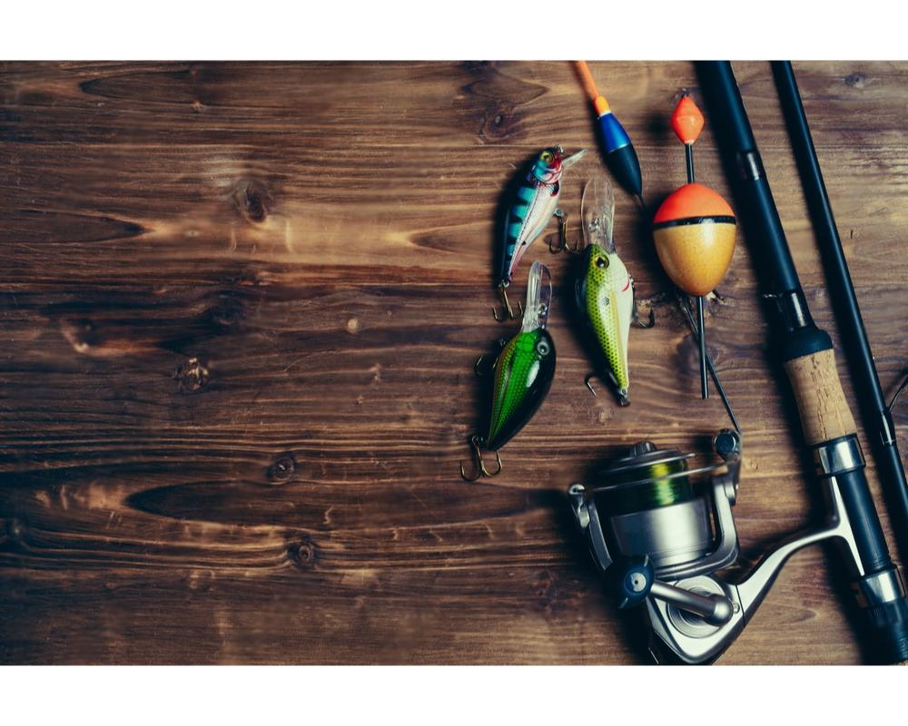

zvejybos prekes | zvejybos reikmenys | zukles reikmenys | zveju parduotuve | vobleriai | vobleriai šapalams | tsuyoki vobleriai | meškerės | meškerė | rites | rite | okuma rites | spiningas lydekoms | spiningai lydekoms | kibimo indikatoriai | shimano rites
Zuklys.lt – tai jūsų patikimas partneris žūklės reikmenų paieškoje. Mes suprantame žūklės aistrą ir norą turėti patikimą įrangą. Mūsų internetinėje parduotuvėje rasite viską, ko gali prireikti nepriekaištingai žūklės patirčiai – nuo meškerių ir ritėlių iki jaukų ir asmeninės žūklės įrangos. Zuklys.lt siūlo aukštos kokybės prekes žinomų gamintojų, patrauklias kainas ir patogų pirkimo procesą. Mūsų tikslas – padėti jums pasiruošti bet kokiai žūklei, kad galėtumėte mėgautis ramybę teikiančiais gamtos momentais.
PREKINTIS
okuma rites
Įsivaizduokite ramybę, sklindančią sėdint ant kranto ankstyvą rytą. Vandens taškymasis nukelia į kitą pasaulį, o mintys nusidažo laukimo spalvomis. Štai tokias akimirkas žada Zuklys.lt kompanija, kiekvienam žvejybos entuziastui pateikdama ritės žvejybai, kurios buvo sukurtos taip, lyg kiekviena būtų meistro pasididžiavimas.
Įsivaizduokite techniką ir patogumą, siejamą su aukščiausios kokybės žvejybos reikmenimis. Zuklys.lt išsirinktos ritės – tai ne tik patikimas bet ir elegantiškas sprendimas, skirtas tiek pradedantiesiems, tiek patyrusiems žvejams. Jos pasižymi ne tik išskirtiniu dizainu, bet ir nepriekaištinga funkcionalumu, o naudojamos medžiagos užtikrina ilgaamžiškumą.
kibimo indikatoriai
Žvejyba mėgstantiems asmenims yra puiki galimybė pabėgti nuo kasdienybės rutinos ir pasinerti į ramybės bei atsipalaidavimo zoną. Vis dėlto, žūklės patirtis gali stipriai skirtis priklausomai nuo naudojamos įrangos. Svarbūs yra tie maži, kartais nepastebimi elementai, kurie lemia, ar iš vandens ištrauksite norimo dydžio laimikį, ar sugrįšite tuščiomis. Čia į pagalbą ateina zuklys.lt – kibimo indikatorių meistrai, kurie žino kaip padaryti žūklę dar efektyvesnę ir malonesnę patirtį.
Kibimo indikatorius – tai neatskiriama bet kurio karpininko įrangos dalis. Tai nedidelė įtaiso detalė, kuri signalizuoja apie žuvies kibimą, taip leisdama žvejui laiku sureaguoti ir imtis veiksmų. Zuklys.lt siūlomi indikatoriai išsiskiria savo patvarumu, funkcionalumu ir estetika. Kiekvienas detali turi būti ne tik praktiška, bet ir gražiai integruotis į bendrą žvejybos įrangos kontekstą.
meškerė
Zvejyba – tai ne vien pramoga ar pomėgis, tai galimybė pabėgti nuo kasdieninės rutinos, atrasti ramybę gamtos apsuptyje ir, žinoma, išmėginti savo kantrybę bei įgūdžius. Bet ar žinojote, kaip svarbų vaidmenį vaidina tinkama įranga? Kompanija zuklys.lt puikiai supranta kiekvieno zvejo poreikius ir siūlo atrinkti geriausias meškeres, kurios taptų jūsų sėkmės garantu vandenyje.
Pasirinkimas tinkamos meškerės neretai gali sukelti galvos skausmą. Juk meškerė yra neatsiejama bet kurio žvejo įrangos dalis, ir nuo jos daug priklauso. Ar tai bus lengva ir jautri meškerė plūduojamai zvejybai, ar galbūt jūs mėgstate jėgos pojūtį ir norite meškerės spiningavimui – zuklys.lt asortimentas pasiūlys sprendimus kiekvieno poreikiams.
spiningai lydekoms
Spiningo Meistriškumas: Pasirinkimas Įspūdingai Žūklei su Zuklys.lt
Meilė žūklei – tai troškimas laimikio ir malonumas ramybės akimirkomis, kuomet esame gamtos apsuptyje. Zuklys.lt jūsų aistringoms žūklės akimirkoms siūlo ne tik įrankį, bet ir meistriškumo simbolį – spiningus lydekoms.
Viskas prasideda nuo spiningo pasirinkimo. Mūsų siūlomi spiningai yra sukurti atsižvelgiant į tai, kad žūklė lydekoms reikalauja ypatingo tikslumo ir jėgos. Kad ir kokias būtumėte išsikėlę užduotis, tinkamas spiningas yra kelio pradžia link sėkmės.
Ar turite klausimų dėl mūsų produktų, pristatymo proceso ar mokėjimo būdų?
Adresas:
V. Krėvės pr. 104j, 50381, Kaunas
Lietuva